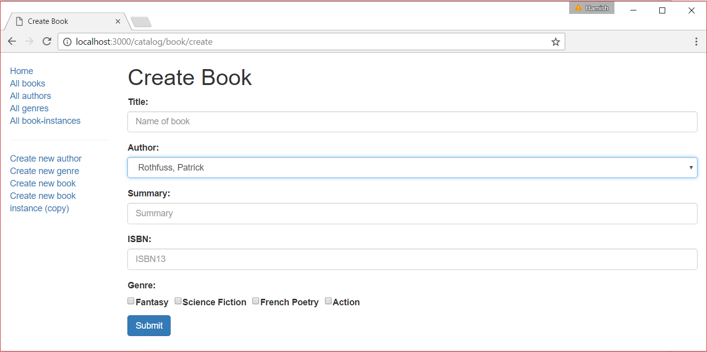

This subarticle shows how to define a page/form to create Book objects. This is a little more complicated than the equivalent Author or Genre pages because we need to get and display available Author and Genre records in our Book form.
Open /controllers/bookController.js, and add the following line at the top of the file:
const { body,validationResult } = require('express-validator');
Find the exported book_create_get() controller method and replace it with the following code.
// Display book create form on GET.
exports.book_create_get = function(req, res, next) {
// Get all authors and genres, which we can use for adding to our book.
async.parallel({
authors: function(callback) {
Author.find(callback);
},
genres: function(callback) {
Genre.find(callback);
},
}, function(err, results) {
if (err) { return next(err); }
res.render('book_form', { title: 'Create Book', authors: results.authors, genres: results.genres });
});
};
This uses the async module (described in Express Tutorial Part 5: Displaying library data) to get all Author and Genre objects. These are then passed to the view book_form.pug as variables named authors and genres (along with the page title).
Find the exported book_create_post() controller method and replace it with the following code.
// Handle book create on POST.
exports.book_create_post = [
// Convert the genre to an array.
(req, res, next) => {
if(!(req.body.genre instanceof Array)){
if(typeof req.body.genre ==='undefined')
req.body.genre = [];
else
req.body.genre = new Array(req.body.genre);
}
next();
},
// Validate and sanitise fields.
body('title', 'Title must not be empty.').trim().isLength({ min: 1 }).escape(),
body('author', 'Author must not be empty.').trim().isLength({ min: 1 }).escape(),
body('summary', 'Summary must not be empty.').trim().isLength({ min: 1 }).escape(),
body('isbn', 'ISBN must not be empty').trim().isLength({ min: 1 }).escape(),
body('genre.*').escape(),
// Process request after validation and sanitization.
(req, res, next) => {
// Extract the validation errors from a request.
const errors = validationResult(req);
// Create a Book object with escaped and trimmed data.
var book = new Book(
{ title: req.body.title,
author: req.body.author,
summary: req.body.summary,
isbn: req.body.isbn,
genre: req.body.genre
});
if (!errors.isEmpty()) {
// There are errors. Render form again with sanitized values/error messages.
// Get all authors and genres for form.
async.parallel({
authors: function(callback) {
Author.find(callback);
},
genres: function(callback) {
Genre.find(callback);
},
}, function(err, results) {
if (err) { return next(err); }
// Mark our selected genres as checked.
for (let i = 0; i < results.genres.length; i++) {
if (book.genre.indexOf(results.genres[i]._id) > -1) {
results.genres[i].checked='true';
}
}
res.render('book_form', { title: 'Create Book',authors:results.authors, genres:results.genres, book: book, errors: errors.array() });
});
return;
}
else {
// Data from form is valid. Save book.
book.save(function (err) {
if (err) { return next(err); }
//successful - redirect to new book record.
res.redirect(book.url);
});
}
}
];
The structure and behavior of this code is almost exactly the same as for creating a Genre or Author object. First we validate and sanitize the data. If the data is invalid then we re-display the form along with the data that was originally entered by the user and a list of error messages. If the data is valid, we then save the new Book record and redirect the user to the book detail page.
The main difference with respect to the other form handling code is how we sanitize the genre information. The form returns an array of Genre items (while for other fields it returns a string). In order to validate the information we first convert the request to an array (required for the next step).
// Convert the genre to an array.
(req, res, next) => {
if(!(req.body.genre instanceof Array)){
if(typeof req.body.genre === 'undefined')
req.body.genre = [];
else
req.body.genre = new Array(req.body.genre);
}
next();
},
We then use a wildcard (*) in the sanitiser to individually validate each of the genre array entries. The code below shows how - this translates to "sanitise every item below key genre".
body('genre.*').escape(),
The final difference with respect to the other form handling code is that we need to pass in all existing genres and authors to the form. In order to mark the genres that were checked by the user we iterate through all the genres and add the checked='true' parameter to those that were in our post data (as reproduced in the code fragment below).
// Mark our selected genres as checked.
for (let i = 0; i < results.genres.length; i++) {
if (book.genre.indexOf(results.genres[i]._id) > -1) {
// Current genre is selected. Set "checked" flag.
results.genres[i].checked = 'true';
}
}
Create /views/book_form.pug and copy in the text below.
extends layout
block content
h1= title
form(method='POST' action='')
div.form-group
label(for='title') Title:
input#title.form-control(type='text', placeholder='Name of book' name='title' required='true' value=(undefined===book ? '' : book.title) )
div.form-group
label(for='author') Author:
select#author.form-control(type='select', placeholder='Select author' name='author' required='true' )
- authors.sort(function(a, b) {let textA = a.family_name.toUpperCase(); let textB = b.family_name.toUpperCase(); return (textA < textB) ? -1 : (textA > textB) ? 1 : 0;});
for author in authors
if book
option(value=author._id selected=(author._id.toString()===book.author._id.toString() ? 'selected' : false) ) #{author.name}
else
option(value=author._id) #{author.name}
div.form-group
label(for='summary') Summary:
textarea#summary.form-control(type='textarea', placeholder='Summary' name='summary' required='true') #{undefined===book ? '' : book.summary}
div.form-group
label(for='isbn') ISBN:
input#isbn.form-control(type='text', placeholder='ISBN13' name='isbn' value=(undefined===book ? '' : book.isbn) required='true')
div.form-group
label Genre:
div
for genre in genres
div(style='display: inline; padding-right:10px;')
input.checkbox-input(type='checkbox', name='genre', id=genre._id, value=genre._id, checked=genre.checked )
label(for=genre._id) #{genre.name}
button.btn.btn-primary(type='submit') Submit
if errors
ul
for error in errors
li!= error.msg
The view structure and behavior is almost the same as for the genre_form.pug template.
The main differences are in how we implement the selection-type fields: Author and Genre.
checked value we set in the controller to determine whether or not the box should be selected.book variable). This is highlighted above!
Note: If there is an error in the submitted form, then, when the form is to be re-rendered, the new book author's id and the existing books's authors ids are of type Schema.Types.ObjectId. So to compare them we must convent them to strings first.
Run the application, open your browser to http://localhost:3000/, then select the Create new book link. If everything is set up correctly, your site should look something like the following screenshot. After you submit a valid book, it should be saved and you'll be taken to the book detail page.

Return to Express Tutorial Part 6: Working with forms.
Proceed to the next subarticle of part 6: Create BookInstance form.